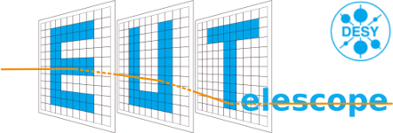

Ressources
External References
GBL (General Broken Lines) is mainly used for track fitting at DESY test beam facility. EUTelescope issue tracker.
Support and Issue Tracker
Having trouble with EUTelescope or found a bug? Please report it on the EUTelescope issue tracker and we'll try to sort it out!
Contact: telescope-coor at desy.de